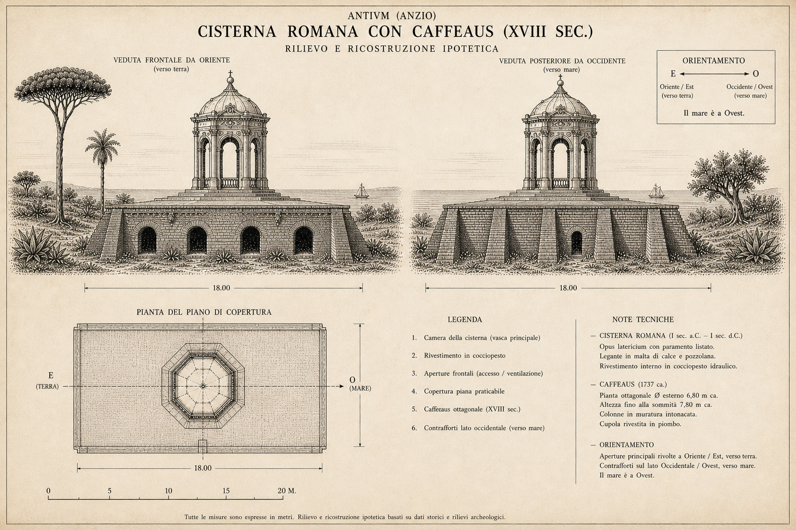

Una cisterna imperiale del II secolo d.C., trasformata nel 1743 in un padiglione di delizia da Galilei e Michetti, distrutta dagli inglesi nel 1813 — tre vite di un edificio sul promontorio
All'incrocio tra via Ardeatina e via Tripoli, sulla dorsale del pianoro di Santa Teresa — dentro il perimetro dell'antico vallo, in prossimità della Porta Aurea — si trovano i resti di una struttura antica nota come «Cisternone». L'edificio fu completamente ignorato da Giuseppe Lugli nel suo studio del 1940, probabilmente perché all'epoca era inglobato in una costruzione moderna (come conferma la carta IGM del 1931 aggiornata al 1942).
La prima interpretazione archeologica fu di Pino Chiarucci nel 1989 (Anzio archeologica), che lo classificò come cisterna di età repubblicana a servizio della cosiddetta «villa del Semaforo». Nel 2009 la Soprintendenza per i Beni Archeologici del Lazio ha avviato scavo e restauro nell'ambito di un progetto di musealizzazione, sotto la direzione scientifica di Francesco Di Mario. I risultati pubblicati da Silvia Aglietti e Angela Patrizia Arena (Lazio e Sabina 8, Roma 2012, pp. 385–391) hanno prodotto correzioni significative rispetto alla lettura precedente.

L'impianto originario è un edificio a pianta rettangolare di circa 10 × 18 m, interamente costruito in opera laterizia, a due piani. Il piano inferiore, con quattro aperture lungo ciascuno dei lati lunghi, aveva funzione esclusivamente sostruttiva: non conteneva acqua. Il serbatoio vero e proprio era collocato al piano superiore, di cui rimane il pavimento in cocciopesto (materiale impermeabile a base di frammenti di cotto macinato nell'intonaco). Lo spazio interno era diviso per la lunghezza in due navate da tre grandi pilastri in laterizio.
Lo scavo ha portato alla luce, su tre dei quattro lati del perimetro, dieci contrafforti a pianta rettangolare disposti radialmente: angolari più grandi (lungh. 2,25 m, spess. 1,20 m) rispetto a quelli laterali (lungh. ~1,65 m, spess. ~0,90 m). Il piano di risega è contrassegnato da due file affiancate di mattoni bipedali. L'assenza di contrafforti sul lato nord-orientale è dovuta alla pendenza naturale del terreno.
La scheda del Museo Civico Archeologico di Anzio descrive la struttura come «un grande ambiente rettangolare sostenuto da tre pilastri interni in blocchi di pietra». Lo scavo di Aglietti e Arena ha dimostrato che questa descrizione mescola elementi di epoche diverse. I tre pilastri originali romani sono in opera laterizia, non in blocchi di pietra. Le volte a botte che dividono lo spazio interno in quattro ambienti, inglobando i pilastri, sono modifiche settecentesche realizzate per il Caffeaus del Cardinal Corsini. Anche i pavimenti in commesso laterizio del piano inferiore appartengono alla fase settecentesca. Sfrondato delle aggiunte post-antiche, l'impianto romano è uno spazio unico a due navate, non quattro ambienti separati.
I confronti tipologici più precisi sono con le cisterne fuori terra a due piani del suburbio romano: la villa di Casale Bianco a Settecamini (I sec. a.C.), quelle di Castel di Guido e Tor Carbone (I sec. d.C.), e soprattutto la cisterna P della Villa dei Quintili sull'Appia (II sec. d.C.), il confronto planimetrico più calzante. In ambiente urbano, il parallelo monumentale è la cisterna delle Sette Sale sul colle Oppio, che alimentava le Terme di Traiano. La datazione della cisterna di Anzio è fissata al II secolo d.C. — età imperiale, non repubblicana.
La cisterna era collegata alla «villa del Semaforo», una grande residenza costiera con settore termale, situata immediatamente a nord della villa imperiale neroniana. Non serviva dunque la Villa di Nerone, ma una villa privata adiacente. La posizione della cisterna sulla dorsale del pianoro — a quota superiore rispetto al complesso termale — consentiva l'alimentazione per gravità.
Lo scavo ha anche individuato, nell'area esterna al lato sud-occidentale, due strutture di una fase tardo-repubblicana precedente: un muro con paramento in opera reticolata di tufo e una fondazione in opera cementizia. Un frammento di anfora Dressel 2-4 (prodotta dal 70 a.C.) e un frammento di vernice nera documentano una frequentazione già in età tardo-repubblicana: l'area era già edificata prima della cisterna imperiale.
Nel 1743 l'area fu inglobata nella vasta tenuta del Cardinal Neri Maria Corsini (Firenze, 1685 – Roma, 1770), nipote di Papa Clemente XII. Il cardinale fece costruire, sopra i ruderi romani, un Caffeaus — un edificio di delizia e ristoro «a guisa di Torretta» — in prossimità del cancello di accesso alla proprietà presso la Porta Aurea.
Il termine caffeaus (o coffee house, kaffeehaus) indica una tipologia architettonica nata in Europa attorno al 1700 come risposta aristocratica alla diffusione dei caffè pubblici borghesi: un edificio privato nei giardini nobiliari, destinato a ricevere ospiti in un punto panoramico privilegiato, lontano dalle formalità del palazzo principale.
I più celebri esempi italiani sono la Coffee House di Palazzo Colonna a Roma (1731–1733), la Coffee House del Quirinale (1741–1744) e la Kaffeehaus di Boboli a Firenze (1774–1785). Il Caffeaus di Anzio, costruito nel 1743, era terzo in ordine di tempo tra i caffeaus romani, immediatamente dopo quello del Quirinale.
Il progetto originale del Caffeaus era dell'architetto Alessandro Galilei (Firenze, 1691 – Roma, 1737), lo stesso della facciata di San Giovanni in Laterano. Il legame tra Galilei e Neri Corsini non era una semplice committenza, ma un rapporto di patronato e debito personale: Corsini aveva reso possibile il rientro di Galilei in Italia nel 1719, quando era a Londra per incarichi diplomatici. Il progetto per la villa di Anzio data al 1731, lo stesso anno della commissione lateranense.
Galilei morì il 21 dicembre 1737: il Caffeaus fu costruito sei anni dopo la sua morte — un progetto postumo. La realizzazione fu affidata a Nicola Michetti (Venezia, ca. 1675 – Roma, 1758), che apportò «sostanziali modifiche» ai disegni originali. Michetti aveva avuto una carriera internazionale straordinaria: dal 1718 al 1723 fu architetto di corte dello Zar Pietro il Grande a San Pietroburgo, completando i padiglioni Monplaisir, Marly ed Ermitage a Peterhof. Nel 1731–1733 aveva già costruito la Coffee House di Palazzo Colonna a Roma.
Il Caffeaus di Anzio non è un episodio isolato: è il prodotto di una precisa rete di committenza corsiniana. Galilei progettò la villa anziate (1731), la cappella Corsini in San Giovanni in Laterano (1731–1735) e la facciata della stessa basilica (1732–1736). Michetti eseguì la villa anziate (1732–1735) e costruì la Coffee House di Palazzo Colonna (1731–1733). Fuga trasformò Palazzo Corsini alla Lungara (1736–1740) e costruì la Coffee House del Quirinale (1741–1744). Quando Michetti costruì il Caffeaus di Anzio nel 1743, aveva già un modello consolidato — il suo padiglione colonnese — da adattare al promontorio laziale.
Un atto del 1743, citato da Aglietti e Arena, descrive la costruzione: «dove su la punta della cima delle mura antiche della città di Anzio verso mare vi è eretta di nuovo una fabbrica a guisa di Torretta detta Caffeaus». Michetti modificò profondamente la cisterna romana sottostante con tre operazioni: costruzione di volte a botte che suddivisero lo spazio in quattro ambienti; posa di pavimenti in commesso laterizio al piano inferiore; erezione della «Torretta» al piano superiore, il caffeaus come padiglione panoramico.
La descrizione più vivida del Caffeaus in rovina si trova in Antonio Nibby: nel Viaggio Antiquario ne' Contorni di Roma (1819) scrive:
Il caffeaus stesso oggi è abbandonato e in rovina: esso è fondato sopra gli antichi avanzi sul culmine del promontorio e perciò si ha di là una veduta vasta e magnifica di tutta la costa: esso fu edificato l'anno 1743 dal Card. Nereo Corsini.
Al 1819 l'edificio era già completamente abbandonato.
Il Caffeaus fu distrutto quasi certamente nel febbraio 1813, quando una formazione di navi inglesi occupò Porto d'Anzio per due giorni, violando il blocco continentale napoleonico. Nella ritirata, i britannici distrussero i fortini, la Torre di Capo d'Anzio e le strutture portuali. Il Caffeaus, con la sua forma di «Torretta» dominante sul promontorio, fu quasi certamente scambiato per una struttura militare di segnalazione — o deliberatamente abbattuto come punto d'osservazione strategico.
È un disegno inedito di Rodolfo Lanciani, intitolato «Antico Edificio Romano detto ora Coffee-House», che ha permesso di identificare con certezza gli «antichi avanzi» su cui fu costruito il Caffeaus con la struttura di via Tripoli. Il disegno raffigura la pianta con i dettagli del bugnato della volta e del pavimento, e dimostra che le volte e i pavimenti del piano inferiore appartengono alla fase settecentesca, non a quella romana. Il documento è conservato nell'Archivio Disegni della SBAL e non è mai stato digitalizzato: l'unica sua riproduzione pubblicata è nella figura 5 di Aglietti–Arena (Lazio e Sabina 8, 2012). Il corpus digitale di Lanciani è consultabile tramite il progetto Stanford (exhibits.stanford.edu/lanciani), con le annotazioni topografiche su Anzio alle pp. 270–271 del Cod. Vat. Lat. 13045.
Il volume Lazio e Sabina 8 (Edizioni Quasar, Roma 2012) pubblica l'unica riproduzione del disegno di Lanciani e i risultati completi dello scavo. La Coffee House di Palazzo Colonna — unico esempio sopravvissuto del lavoro di Michetti in questa tipologia — è visitabile a Roma nel giardino del palazzo (apertura settimanale il sabato mattina): offre un'idea concreta del livello qualitativo del Caffeaus di Anzio.
| Fase | Datazione | Descrizione |
|---|---|---|
| Tardo-repubblicana | I sec. a.C. | Muri in opera reticolata di tufo: area già edificata prima della cisterna |
| Imperiale: cisterna | II sec. d.C. | Cisterna fuori terra a 2 piani (10×18 m), 3 pilastri in laterizio, 10 contrafforti, pavimento in cocciopesto |
| Settecentesca: Caffeaus | 1743 | Michetti su progetto postumo di Galilei: volte a botte, pavimenti in commesso, «Torretta» panoramica al piano superiore |
| Distruzione | Feb. 1813 | Incursione navale inglese: la «Torretta» è abbattuta come struttura di segnalazione militare |
Incrocio tra via Ardeatina e via Tripoli, quartiere Santa Teresa, Anzio. La struttura è visibile dall'esterno; l'accesso all'interno è consentito tramite il circuito del Museo Civico Archeologico di Anzio.